<title>The 4x Mould</title>
<meta name="claude:viewport-fit-sides" content="cover">
<link rel="stylesheet" href="https://fonts.googleapis.com/css2?family=IBM+Plex+Sans:wght@400;500;600&family=IBM+Plex+Mono:wght@400;500&family=Space+Grotesk:wght@500;600&display=swap">
<style>
/* Layout: one reading column, the same family as the phase 1 census page; videos run the full column with their counts under them. */
:root {
  --bg: #f4f6f5; --panel: #ffffff; --fg: #18211f; --muted: #56635f; --rule: #d5dcd9;
  --accent: #b86a12; --good: #2f7d4f; --bad: #b3372e; --dish: #0a1013;
  --display: "Space Grotesk", "IBM Plex Sans", system-ui, sans-serif;
  --body: "IBM Plex Sans", system-ui, -apple-system, sans-serif;
  --mono: "IBM Plex Mono", ui-monospace, Menlo, monospace;
}
@media (prefers-color-scheme: dark) { :root:not([data-theme="light"]) {
  --bg: #0d1413; --panel: #141d1b; --fg: #e3ebe8; --muted: #9aa9a4; --rule: #2a3633;
  --accent: #f0a34a; --good: #6fc896; --bad: #f08a80; --dish: #070b0d; color-scheme: dark } }
:root[data-theme="dark"] {
  --bg: #0d1413; --panel: #141d1b; --fg: #e3ebe8; --muted: #9aa9a4; --rule: #2a3633;
  --accent: #f0a34a; --good: #6fc896; --bad: #f08a80; --dish: #070b0d; color-scheme: dark }
body { background: var(--bg); color: var(--fg); font: 15px/1.55 var(--body); }
main { max-width: 1040px; margin: 0 auto; padding-block: 32px 64px;
  padding-left: max(16px, env(safe-area-inset-left, 0px)); padding-right: max(16px, env(safe-area-inset-right, 0px));
  display: grid; gap: 40px; }
h1, h2, h3 { font-family: var(--display); text-wrap: balance; margin: 0; line-height: 1.2; }
h1 { font-size: 1.9rem; }
h2 { font-size: 1.3rem; }
h3 { font-size: 1rem; }
p { margin: 0; max-width: 68ch; }
.eyebrow { font: 500 0.75rem var(--mono); letter-spacing: 0.08em; text-transform: uppercase; color: var(--muted); }
section { display: grid; gap: 14px; min-width: 0; }
.verdict { display: inline-block; font: 600 0.75rem var(--mono); padding: 1px 7px; border-radius: 4px; border: 1px solid currentColor; white-space: nowrap; }
.ok { color: var(--good); } .no { color: var(--bad); } .mid { color: var(--accent); }
.scroll { overflow-x: auto; }
table { border-collapse: collapse; width: 100%; font-size: 0.88rem; font-variant-numeric: tabular-nums; }
th, td { text-align: left; padding: 8px 10px; border-bottom: 1px solid var(--rule); vertical-align: top; }
th { font: 500 0.72rem var(--mono); letter-spacing: 0.05em; text-transform: uppercase; color: var(--muted); }
td.num { font-family: var(--mono); white-space: nowrap; }
td small { display: block; color: var(--muted); font-size: 0.78rem; }
figure { margin: 0; display: grid; gap: 8px; min-width: 0; }
figure video, figure img { width: 100%; max-width: 100%; display: block; border-radius: 6px; background: var(--dish); aspect-ratio: 8 / 5; }
figcaption { font-size: 0.9rem; color: var(--muted); }
figcaption b { color: var(--fg); font-weight: 600; }
.counts { display: flex; flex-wrap: wrap; gap: 4px 18px; font: 0.82rem var(--mono); }
.counts b { color: var(--accent); font-weight: 500; }
.films { display: grid; gap: 28px; }
.ladder { display: grid; gap: 18px; grid-template-columns: repeat(4, minmax(0, 1fr)); }
@media (max-width: 860px) { .ladder { grid-template-columns: repeat(2, minmax(0, 1fr)); } }
@media (max-width: 460px) { .ladder { grid-template-columns: 1fr; } }
.ladder figcaption { font-size: 0.82rem; }
.ladder .counts { font-size: 0.75rem; gap: 2px 12px; }
.key { border: 1px solid var(--rule); border-radius: 6px; padding: 12px 14px; font-size: 0.82rem; color: var(--muted); display: grid; gap: 6px; align-content: start; background: var(--panel); }
.key b { color: var(--fg); font-weight: 600; }
ul { margin: 0; padding-left: 1.2em; display: grid; gap: 6px; max-width: 70ch; }
code { font-family: var(--mono); font-size: 0.88em; }
.note { color: var(--muted); font-size: 0.85rem; }
</style>

<main>
  <header style="display:grid;gap:10px">
    <div class="eyebrow">GPU plan · scaling rule and the big dish · 2026-11-10</div>
    <h1>The mould on a grid four times finer</h1>
    <p>Today's dish is 256 x 160 cells with about 2,000 walkers. These runs put the same model on 1024 x 640 cells, with 32,000 walkers (today's crowding) and 100,000. The dish is neutral: an empty ellipse with seven food piles and no tools, judged on engine measures, not on any level. It runs on the CPU with the rules a GPU would use (walkers move all at once, trail and scent stay floats), so nothing here needed a GPU yet.</p>
  </header>

  <section>
    <h2>What scale looks like</h2>
    <p>Walkers start spread over the dish. Seed 1, 30 dish seconds played at three times speed. Every pixel is trail; nothing is drawn on top. Counts are at 30 seconds; "loops" are holes in the network at least one of today's cells big, "width" is mean tube width in today's cells, "strays" are walkers standing off the network.</p>
    <div class="films">
      <figure>
        <video src="video/today-uniform.mp4" poster="video/today-uniform-30s.jpg" muted loop playsinline autoplay controls preload="metadata"></video>
        <figcaption><b>Today: 256 x 160, 2,000 walkers.</b></figcaption>
        <div class="counts"><span>loops <b>3</b></span><span>width <b>13.5</b></span><span>strays <b>0.8%</b></span><span>piles reached <b>7 of 7</b></span><span>one core <b>0.54 ms</b> a tick</span></div>
      </figure>
      <figure>
        <video src="video/nose-uniform.mp4" poster="video/nose-uniform-30s.jpg" muted loop playsinline autoplay controls preload="metadata"></video>
        <figcaption><b>1024 x 640, 32,000 walkers</b>, with the scaling rule chosen below.</figcaption>
        <div class="counts"><span>loops <b>59</b> (94 at 10 s)</span><span>width <b>3.5</b></span><span>strays <b>3.0%</b></span><span>piles reached <b>7 of 7</b></span><span>one core <b>11.3 ms</b>, four <b>6.7 ms</b> a tick</span></div>
      </figure>
      <figure>
        <video src="video/dense-uniform.mp4" poster="video/dense-uniform-30s.jpg" muted loop playsinline autoplay controls preload="metadata"></video>
        <figcaption><b>1024 x 640, 100,000 walkers</b>, same rule.</figcaption>
        <div class="counts"><span>loops <b>92</b> (164 at 10 s)</span><span>width <b>5.3</b></span><span>strays <b>2.5%</b></span><span>piles reached <b>7 of 7</b></span><span>one core <b>21.6 ms</b>, four <b>20.2 ms</b> a tick</span></div>
      </figure>
    </div>
    <p>The fine net starts as a foam and coarsens as small loops close. Food piles become hubs with spokes. A tick is one of today's steps; the game runs 120 a second, so real time needs about 8 ms a tick for everything. The fine dishes are well past that on the CPU, which is the GPU's job.</p>
  </section>

  <section>
    <h2>The scaling rule</h2>
    <p>A finer grid changes distances. A walker that steps one cell crosses a quarter of today's cell, and its sensors reach a quarter as far. Each arm below adds one fix to the one before, and each was run from both starts on 16 seeds, paired with today on the same seed. A count marked * holds up after correcting for the 36 comparisons (sign test, p &lt; 0.0014).</p>
    <div class="scroll">
      <table>
        <thead><tr><th>Arm</th><th>What it adds</th><th>Piles reached at 20 s, from a blob</th><th>Loops at 20 s, spread start</th><th>Tube width</th><th>Strays, spread / blob</th><th>ms a tick, one core</th><th>Verdict</th></tr></thead>
        <tbody>
          <tr><td>today</td><td>256 x 160, 2,000 walkers</td><td class="num">4</td><td class="num">3</td><td class="num">12.9</td><td class="num">0.7% / 5.1%</td><td class="num">0.54</td><td></td></tr>
          <tr><td>naive</td><td>1024 x 640, 32,000 walkers, every number as today but counted in fine cells</td><td class="num">2.5<small>lower on 15 of 16*</small></td><td class="num">52.5<small>more on 16 of 16*</small></td><td class="num">3.3</td><td class="num">5.6% / 5.4%</td><td class="num">11.7</td><td><span class="verdict mid">fine net, slower</span></td></tr>
          <tr><td>steps</td><td>four fine steps a tick, so walkers cross a dish cell a tick as today</td><td class="num">2.5<small>lower on 14 of 16*</small></td><td class="num">15.5</td><td class="num">4.4</td><td class="num">11.6% / 13.8%</td><td class="num">43.1</td><td><span class="verdict no">rejected</span></td></tr>
          <tr><td>smell</td><td>scent kept on today's grid, so it spreads as far as today</td><td class="num">3<small>lower on 14 of 16*</small></td><td class="num">11</td><td class="num">3.9</td><td class="num">20% / 24%</td><td class="num">32.0</td><td><span class="verdict no">rejected</span></td></tr>
          <tr><td>reach</td><td>sensors 36 fine cells out, today's reach</td><td class="num">4<small>13 of 16 tied</small></td><td class="num">12</td><td class="num">3.8</td><td class="num">39% / 50%*</td><td class="num">26.4</td><td><span class="verdict mid">today's pace, half stray</span></td></tr>
          <tr><td>turn</td><td>trail spreads as far as today's, walkers turn once a tick: every number today's</td><td class="num">3<small>lower on 8, tied 8</small></td><td class="num">0<small>fewer on 16 of 16*</small></td><td class="num">13.0</td><td class="num">0.3% / 0.0%</td><td class="num">71.1</td><td><span class="verdict no">no network</span></td></tr>
          <tr><td>nose</td><td>naive, but food is smelled 36 fine cells out while trail is sensed 9 out</td><td class="num">3<small>lower on 15 of 16*</small></td><td class="num">64.5<small>more on 16 of 16*</small></td><td class="num">3.5</td><td class="num">2.2% / 2.2%</td><td class="num">11.3</td><td><span class="verdict ok">chosen</span></td></tr>
        </tbody>
      </table>
    </div>
    <p>Medians over 16 seeds. Width is in today's cells. Every arm reaches all 7 piles within 20 s from a spread start, so pace is measured from a blob.</p>
    <ul>
      <li><b>Copying today exactly gives no network.</b> With every number in today's units (turn), 16 walkers share each of today's cells and the trail turns smooth, so the dish settles into wide tubes with no loops. Today's network comes partly from its coarse grain.</li>
      <li><b>More steps a frame is rejected.</b> It costs three to four times as much and gives fewer loops and more strays than the plain port, with no faster spread.</li>
      <li><b>Smelling food far is the one fix that helps on every measure.</b> Against naive on the same seeds, nose has more loops from a spread start and fewer strays from both starts, on 16 of 16 seeds each, for the same cost. The sensor offset sets the size of the mesh, so trail stays sensed near and only scent is smelled at today's reach.</li>
      <li><b>From a packed blob the fine dish reaches less food:</b> 3 piles at 20 s against today's 4. Only full sensor reach kept today's pace, and it left half the walkers wandering.</li>
    </ul>
  </section>

  <section>
    <h2>Every arm at 20 seconds</h2>
    <p>Seed 1, picked before the runs. Counts beside each picture are this seed's.</p>
    <h3>Spread start</h3>
    <div class="ladder">
      <figure>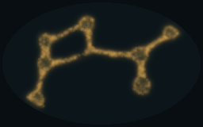<figcaption><b>today</b></figcaption><div class="counts"><span>loops <b>3</b></span><span>width <b>12.3</b></span><span>strays <b>1.4%</b></span></div></figure>
      <figure>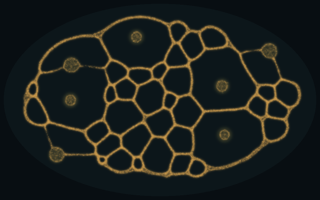<figcaption><b>naive</b></figcaption><div class="counts"><span>loops <b>54</b></span><span>width <b>3.2</b></span><span>strays <b>5.9%</b></span></div></figure>
      <figure>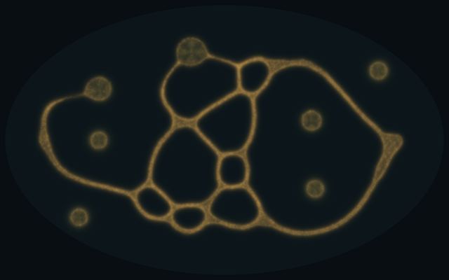<figcaption><b>steps</b></figcaption><div class="counts"><span>loops <b>17</b></span><span>width <b>4.4</b></span><span>strays <b>11.5%</b></span></div></figure>
      <figure>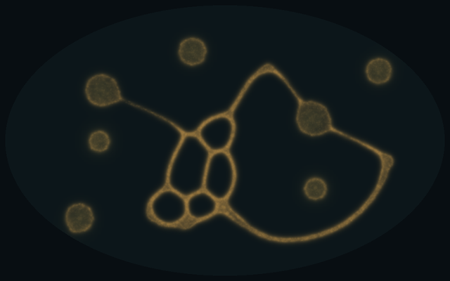<figcaption><b>smell</b></figcaption><div class="counts"><span>loops <b>15</b></span><span>width <b>3.9</b></span><span>strays <b>22.8%</b></span></div></figure>
      <figure>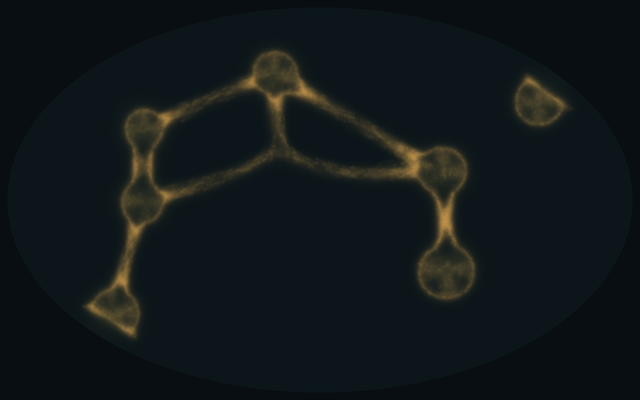<figcaption><b>reach</b></figcaption><div class="counts"><span>loops <b>11</b></span><span>width <b>3.4</b></span><span>strays <b>46.7%</b></span></div></figure>
      <figure>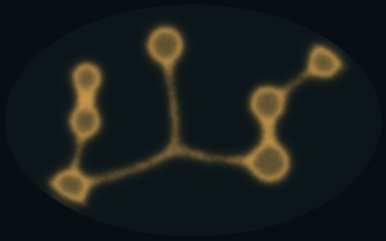<figcaption><b>turn</b></figcaption><div class="counts"><span>loops <b>0</b></span><span>width <b>12.9</b></span><span>strays <b>0.1%</b></span></div></figure>
      <figure>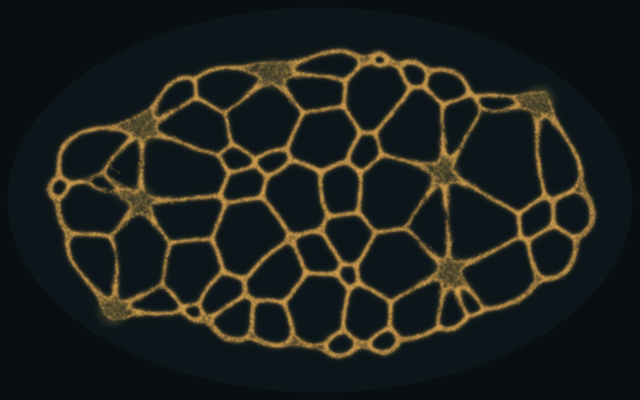<figcaption><b>nose</b> (chosen)</figcaption><div class="counts"><span>loops <b>71</b></span><span>width <b>3.5</b></span><span>strays <b>1.8%</b></span></div></figure>
      <div class="key"><b>Reading the counts</b><span>Loops: holes in the network at least one of today's cells big.</span><span>Width: mean tube width in today's cells.</span><span>Strays: walkers standing where the trail is under the tube level.</span></div>
    </div>
    <h3>Blob start</h3>
    <div class="ladder">
      <figure>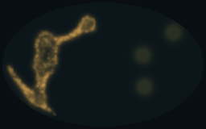<figcaption><b>today</b></figcaption><div class="counts"><span>piles <b>4 of 7</b></span><span>strays <b>6.8%</b></span></div></figure>
      <figure>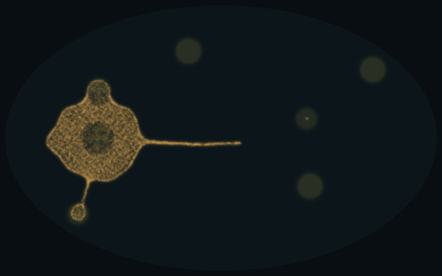<figcaption><b>naive</b></figcaption><div class="counts"><span>piles <b>4 of 7</b></span><span>strays <b>7.5%</b></span></div></figure>
      <figure>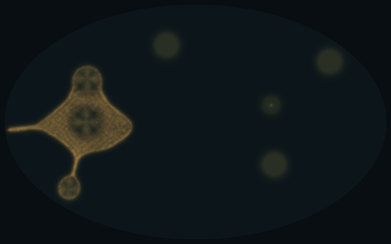<figcaption><b>steps</b></figcaption><div class="counts"><span>piles <b>4 of 7</b></span><span>strays <b>19.2%</b></span></div></figure>
      <figure>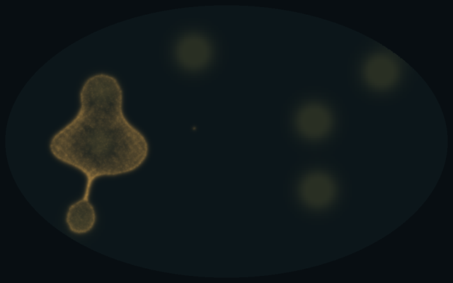<figcaption><b>smell</b></figcaption><div class="counts"><span>piles <b>3 of 7</b></span><span>strays <b>29.5%</b></span></div></figure>
      <figure>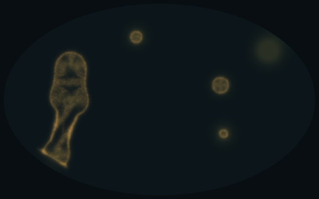<figcaption><b>reach</b></figcaption><div class="counts"><span>piles <b>6 of 7</b></span><span>strays <b>40.4%</b></span></div></figure>
      <figure>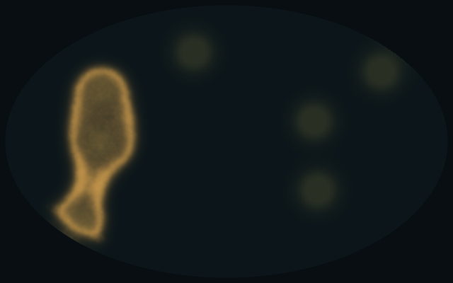<figcaption><b>turn</b></figcaption><div class="counts"><span>piles <b>3 of 7</b></span><span>strays <b>0.0%</b></span></div></figure>
      <figure>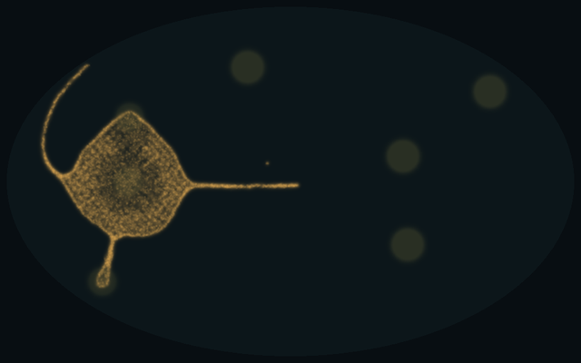<figcaption><b>nose</b> (chosen)</figcaption><div class="counts"><span>piles <b>3 of 7</b></span><span>strays <b>3.9%</b></span></div></figure>
      <div class="key"><b>Piles</b><span>Food piles the tube has reached, home included. All seven are placed the same on every arm for a seed.</span></div>
    </div>
  </section>

  <section>
    <h2>A packed blob stays a bag</h2>
    <p>On the fine grid, walkers packed onto home hold together as a bag with a bright rim and send out a few thin tubes; today's blob breaks into arms. The fine blob is about 24 sensor reaches across where today's is 6, and the one arm whose sensors reach as far as today's kept today's pace, so the blob's size against the sensor reach is the likely cause. In the game the mould grows from a small seed by births, which this dish leaves out, so this is checked again when the economy is ported.</p>
    <div class="films">
      <figure>
        <video src="video/today-blob.mp4" poster="video/today-blob-30s.jpg" muted loop playsinline autoplay controls preload="metadata"></video>
        <figcaption><b>Today, 2,000 walkers from a blob.</b></figcaption>
        <div class="counts"><span>piles <b>4 of 7</b></span><span>loops <b>9</b></span><span>strays <b>7.3%</b></span></div>
      </figure>
      <figure>
        <video src="video/nose-blob.mp4" poster="video/nose-blob-30s.jpg" muted loop playsinline autoplay controls preload="metadata"></video>
        <figcaption><b>32,000 walkers from a blob</b>, chosen rule.</figcaption>
        <div class="counts"><span>piles <b>3 of 7</b></span><span>loops <b>28</b></span><span>strays <b>4.0%</b></span></div>
      </figure>
      <figure>
        <video src="video/dense-blob.mp4" poster="video/dense-blob-30s.jpg" muted loop playsinline autoplay controls preload="metadata"></video>
        <figcaption><b>100,000 walkers from a blob</b>, chosen rule. The blob fills a third of the dish.</figcaption>
        <div class="counts"><span>piles <b>4 of 7</b></span><span>loops <b>36</b></span><span>strays <b>1.7%</b></span></div>
      </figure>
    </div>
    <p class="note">Counts at 30 s, seed 1.</p>
  </section>

  <section>
    <h2>Cost on the CPU</h2>
    <p>One run at a time on a four-core cloud machine, seed 1, blob start, 5 dish seconds; simulation only, no drawing. Moving the walkers runs on one thread, so four threads help the field passes but not the 100,000-walker dish.</p>
    <div class="scroll">
      <table>
        <thead><tr><th>Arm</th><th>Cells</th><th>Walkers</th><th>ms a tick, one thread</th><th>four threads</th></tr></thead>
        <tbody>
          <tr><td>today</td><td class="num">41k</td><td class="num">2,000</td><td class="num">0.54</td><td class="num">0.53</td></tr>
          <tr><td>naive</td><td class="num">655k</td><td class="num">32,000</td><td class="num">11.7</td><td class="num">6.4</td></tr>
          <tr><td>nose (chosen)</td><td class="num">655k</td><td class="num">32,000</td><td class="num">11.3</td><td class="num">6.7</td></tr>
          <tr><td>nose, 100k walkers</td><td class="num">655k</td><td class="num">100,000</td><td class="num">21.6</td><td class="num">20.2</td></tr>
          <tr><td>reach</td><td class="num">655k</td><td class="num">32,000</td><td class="num">26.4</td><td class="num">18.9</td></tr>
          <tr><td>smell</td><td class="num">655k</td><td class="num">32,000</td><td class="num">32.0</td><td class="num">19.6</td></tr>
          <tr><td>steps</td><td class="num">655k</td><td class="num">32,000</td><td class="num">43.1</td><td class="num">25.8</td></tr>
          <tr><td>turn</td><td class="num">655k</td><td class="num">32,000</td><td class="num">71.1</td><td class="num">31.7</td></tr>
        </tbody>
      </table>
    </div>
  </section>

  <section>
    <h2>What this decides</h2>
    <ul>
      <li><b>The GPU's scaling rule:</b> keep today's numbers counted in fine cells, one fine step a tick, and smell food at today's reach of 9 cells. It is also the cheapest arm.</li>
      <li><b>Rejected:</b> more steps a frame, and copying today exactly.</li>
      <li><b>Still open:</b> pace from a packed start, which the economy may settle; the GPU timing on the GTX 1070, which waits until you are at the desktop with the Claude app open.</li>
      <li><b>Then the plan's gate:</b> you pick the target scale and look (32,000 or 100,000 walkers), or stop.</li>
    </ul>
    <p class="note">Source: <code>Reports/gpu-plan-2026-11-10.md</code>, scaling rule and phase 2. Code: <code>src/mould/big.rs</code>, <code>examples/bigdish.rs</code>. Raw runs, tables and timing: <code>Reports/gpu-plan-2026-11-10/scale/</code>.</p>
  </section>
</main>

<script>
// Respect reduced motion: hold the videos on their posters until played.
try {
  if (window.matchMedia && window.matchMedia("(prefers-reduced-motion: reduce)").matches) {
    document.querySelectorAll("video").forEach(function (v) { v.removeAttribute("autoplay"); v.pause(); });
  }
} catch (e) {}
</script>
